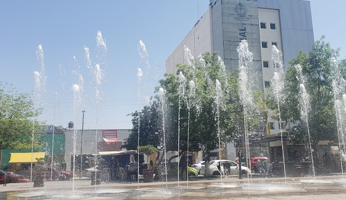
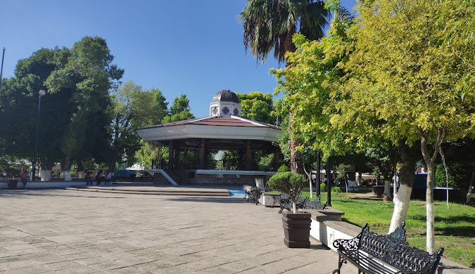

Conoce La Plaza de Armas Gomez Palacio
La Plaza de Armas de Gómez Palacio se remonta a los primeros años de la ciudad, que fue fundada el 15 de marzo de 1905 como un importante punto de conexión entre el desarrollo agrícola e industrial de la región. Este espacio fue diseñado como el centro neurálgico de la ciudad, siguiendo el modelo clásico de las plazas mexicanas, que servían como puntos de reunión y vida social. Con el paso de las décadas, la plaza se convirtió en testigo del crecimiento y evolución de Gómez Palacio, adaptándose a los cambios sociales y urbanos.
La historia de Gómez Palacio se remonta a 1885, cuando comenzó a consolidarse como una ciudad en honor a Francisco Gómez Palacio, destacado político y gobernador de Durango. Durante sus primeros años, la región se benefició enormemente de su proximidad al río Nazas y de la construcción del ferrocarril, lo que impulsó su desarrollo agrícola e industrial. En este contexto, la Plaza de Armas se convirtió en un símbolo del progreso y un lugar clave para la comunidad.
Arquitectura, Atracciones, Importancia Cultural y Social
El diseño de la plaza incluye un icónico kiosco, rodeado de jardines bien cuidados, fuentes y bancas que invitan al descanso. Este espacio es un reflejo de la arquitectura típica de principios del siglo XX, con influencias que mezclan lo funcional con lo estético. Además, su ubicación central permite que esté rodeada por edificios históricos y administrativos, reforzando su importancia dentro de la ciudad.
A lo largo del año, la Plaza de Armas es escenario de actividades culturales que reflejan la identidad de Gómez Palacio. Desde festivales hasta ferias gastronómicas y presentaciones artísticas, este lugar fomenta el sentido de comunidad y resalta la rica herencia cultural de la región. La plaza también ha sido testigo de eventos históricos que han marcado la vida de sus habitantes, convirtiéndola en un símbolo de memoria colectiva.
Hoy en día, la Plaza de Armas sigue siendo un punto de encuentro para las familias locales y los turistas que visitan Gómez Palacio. Su belleza y ambiente acogedor la convierten en un lugar ideal para relajarse y disfrutar de la hospitalidad duranguense. Además, es un punto de partida para explorar otros atractivos cercanos, como los mercados tradicionales y museos de la ciudad
La Plaza de Armas es más que un espacio público; es el corazón histórico y cultural de Gómez Palacio, un lugar que celebra tanto su pasado como su vibrante presente.